Noise Zones
Noise Zones is a classification system for Pavement Noise that categorizes concrete pavement surfaces into distinct acoustic regions based on measured sound pressure levels [1]. Developed from field measurements compiled under Part 2 of the ISU-FHWA-ACPA Concrete Pavement Surface Characteristics Program, this three-zone system is grounded in OBSI data collected on 1,012 test sections (240,000 ft., 395 unique pavement textures) across 15 US states and Quebec — the most comprehensive inventory of concrete pavement surface textures ever compiled [1] [2]. The approach involves rank ordering pavements from quietest to loudest, with observed levels ranging approximately from 100 dBA to 113 dBA depending on texture configurations and surface conditions [1]. By establishing these categories, engineers can facilitate targeted noise mitigation strategies, such as diamond grinding, which has been shown to reduce source levels by up to 9 dBA relative to noisier surfaces [1].
Sources (6)
Introduction to Tire-Pavement Noise Mechanisms
The tire-pavement noise mechanisms are categorized into three fundamental types: radial vibrations caused by tread impacting the road, tangential vibrations from sliding or sticking within the contact patch, and air pumping where trapped air creates shock waves during compression and expansion. [1]
Noise Generation: Macrotexture and Microtexture
Macrotexture wavelengths range from 0.5 to 50 mm (0.02 to 2.0 in.) and serve as a primary contributor to pavement noise while also providing drainage for safety [1]. In contrast, microtexture wavelengths are less than 0.5 mm (0.02 in.) and consist of irregularities not readily visible to the naked eye; although it does not significantly contribute to highway-speed noise, microtexture influences pavement friction [1].
 Pavement surface texture categories of macrotexture and microtexture [1]
Pavement surface texture categories of macrotexture and microtexture [1]
Zone 1: Innovation Zone (Ultra-Quiet Solutions)
Because no conventional concrete solutions exist consistently in this zone, innovative approaches are required, such as increased porosity, minimized adverse texture wavelengths, modified mechanical properties (stiffness), pervious concrete, inclusions, and polymers. Negative textured pavements are probably the only viable concrete solution for the target of ultra-quiet solutions where owners demand maximum noise reduction [1]. For comparison, asphalt options include double-layer porous asphalt (93 dBA) and crumb rubber (96 dBA).
 Water permeating pervious concrete [1]
Water permeating pervious concrete [1]
On-Board Sound Intensity (OBSI) employs paired directional microphones for repeatable measurements with standard errors of 0.02–0.4 dBA [1].
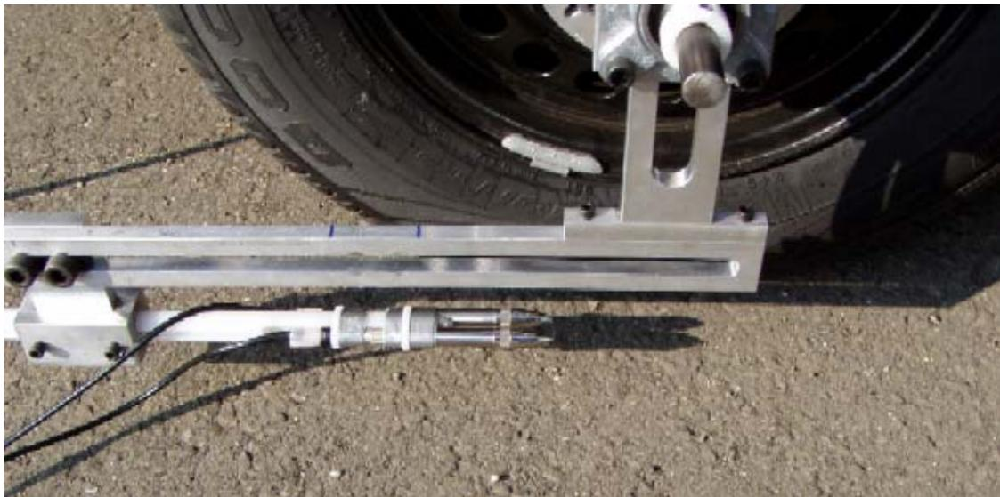
OBSI measuring device [1]Negative (downward pointing) texture is critical for achieving quiet concrete pavements, a characteristic naturally exhibited by the open structure of pervious concrete [3].
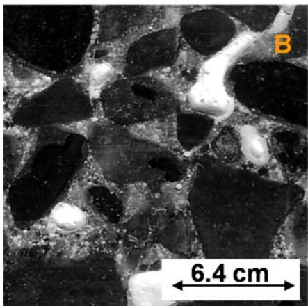
Images of typical pervious concrete samples [3]Among various textures, drag textures such as artificial turf and burlap are among the quieter; specifically, drag/grinding ranked quietest based on average OBSI levels.
In comparison, diamond grinding is 2–5 dBA quieter than transverse tining, with noise reduction remaining stable after one year, while an Arizona study showed up to 9 dBA reduction.
Longitudinal tining is quieter than transverse tining and lower friction numbers are possible, whereas transverse tining represents the loudest category; uniformly spaced transverse tining produces tonal “wheel whine,” though random spacing (10–76 mm) mitigates tone even if overall levels may increase.
Exposed aggregate can provide European reductions of 4–5 dBA, but the US I-75 Detroit project showed only 0.4 dBA reduction, which is attributed to excessive macrotexture and large sand particles >1 mm.
To manage these characteristics, two-lift paving utilizes a lower-quality base layer combined with a harder, higher-friction top layer to reduce noise while controlling costs by minimizing the use of expensive aggregates [4].
In Germany, two-lift paving is employed not only for noise reduction but also to achieve smoother profiles and resist freezing-thawing effects through the use of higher-quality aggregates in the top layer [4].
 Two-lift paving in Austria (Source: http://www.walter-heilit-vwb.de/english/toechterg/wien.htm) [4]
Two-lift paving in Austria (Source: http://www.walter-heilit-vwb.de/english/toechterg/wien.htm) [4]
The two-lift technique can facilitate the construction of exposed aggregate surfaces for noise reduction by allowing smaller aggregates to be used in the top lift [4].
The open structure of pervious concrete causes a difference in arrival time between direct and reflected sound waves, which decreases noise level intensity by absorbing the sound [5].
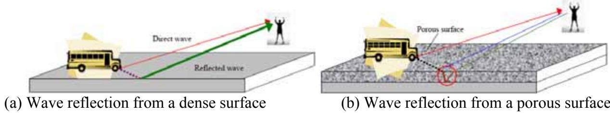
Reflection of sound waves resulting from moving vehicles [5]To ensure consistent noise reduction performance, pervious concrete overlays can be designed to possess uniform porosity or void structure throughout the pavement [3].
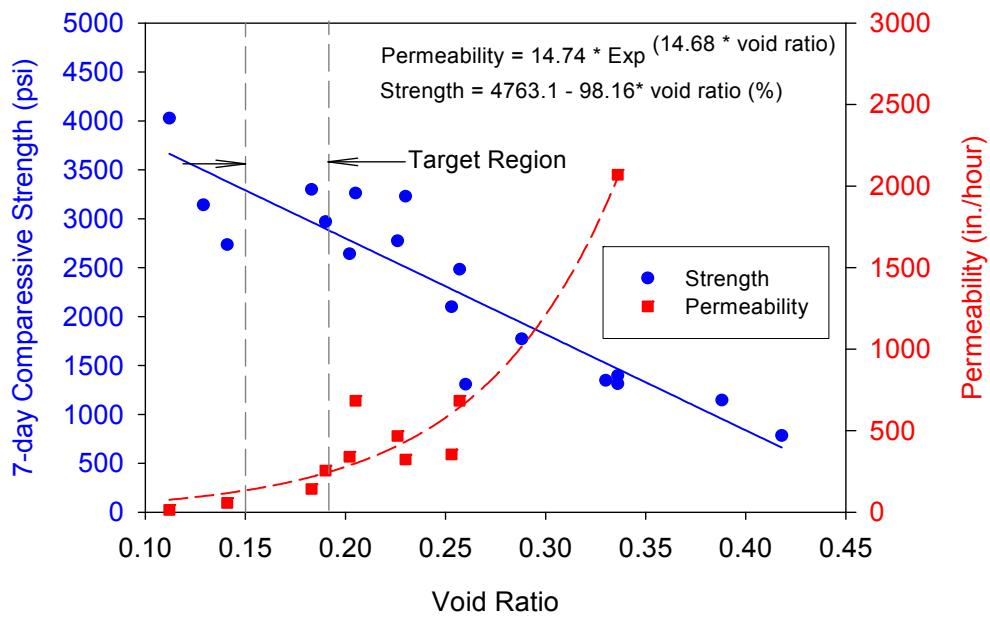
Relationship between pervious concrete void ratio, permeability, and seven-day compressive strength for all mixes placed using regular compaction energy [3]Japanese studies of pervious concrete have shown a 6–8 dBA reduction (dry) and 4–8 dBA (wet) vs. dense asphalt.
pervious concrete with small-size aggregate generally produces a quieter response than normal concrete, ranging from a 3% to 10% lower noise level with a maximum difference of eight decibels [5].
As frequency increases, pervious concrete becomes quieter than standard concrete pavement, achieving a maximum reduction of five decibels at higher frequencies [5].
Regarding specific acoustic measurements, pervious concrete overlays can achieve OBSI noise levels in the low 90s dBA range, with specific field tests recording values of 96 dBA for traffic lanes and 92.4 dBA for environmental lanes [3].
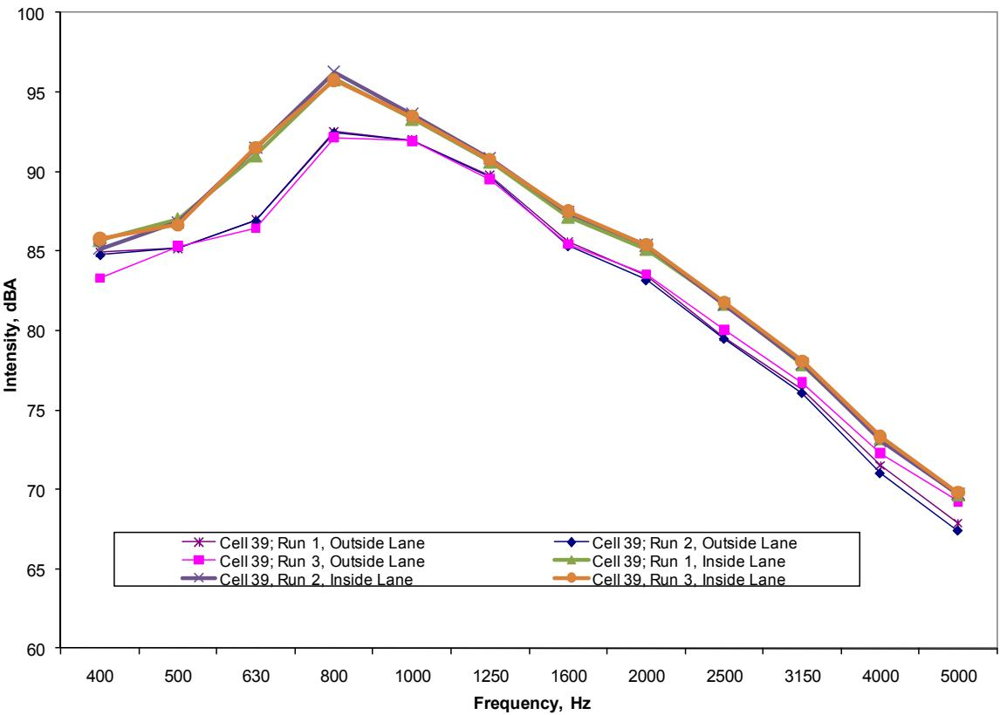
Frequency versus intensity for Cell 39, outside environmental lane and inside traffic lane, July 22, 2009 [3]pervious concrete overlays quickly remove rainwater from the pavement surface and migrate it laterally to the side, effectively mitigating splash and spray while reducing hydroplaning difficulties [3].
Zone 2: Quality Zone (Target Range)
- Target range for both new and existing concrete pavements
- Any nominal texture type can achieve this zone with quality control (drag, grinding, longitudinal tining, even some transverse tining)
- Grinding and burlap/turf drags provide the easiest path to this zone
- New pavements can consistently be built below 103 dBA with diligent quality control
- Variability is too high for all texture types — consistency is key
- Joint effects: thin single-cut joints; uniform sealant without protrusion [1]
Measurement of texture variability using the RoboTex system based on the LMI Selcom sensor shows that tining, particularly transverse tining, has higher variability than drag or ground textures. [1]
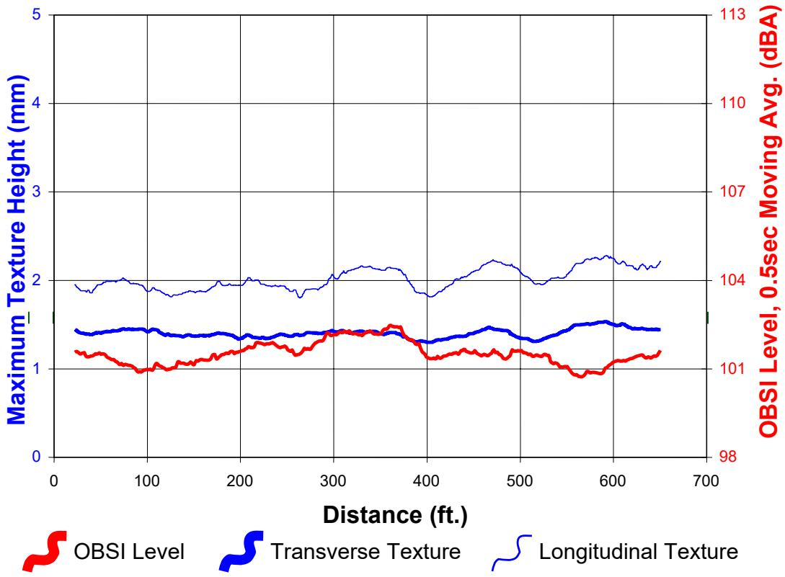
Preliminary reporting of texture vs. OBSI level for uniform transverse tining [1]Field measurements established three noise zones, which were refined under Part 2 through the compilation of data from 1,012 test sections (240,000 ft., 395 unique pavement textures), representing the most comprehensive inventory ever compiled.
OBSI data at 60 mph using a (Goodyear Aquatred III tire) showed concrete pavement noise ranging from ~100 dBA to 111 dBA, noting that a 10 dBA difference can be perceived as a doubling of loudness [2].
The first category is Zone 1 — Innovation Zone (≤99/100 dBA), where no conventional concrete solutions exist and innovative approaches such as pervious concrete, inclusions, polymers, or negative texture are required; meanwhile, asphalt solutions include double-layer porous asphalt (93 dBA) and crumb rubber (96 dBA) [1].
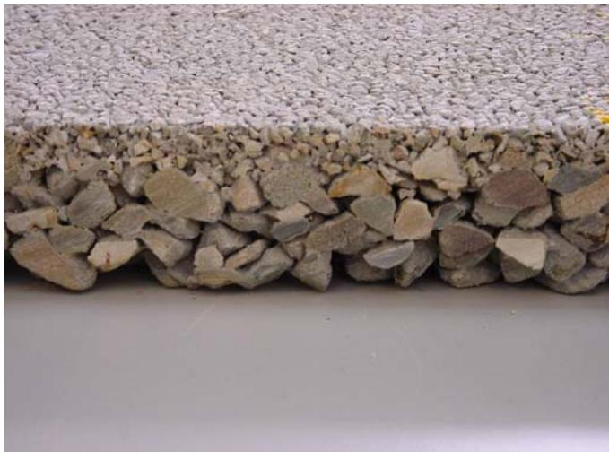
Double-layer pervious concrete [1]Zone 2 — Quality Zone (99/100–104/105 dBA) serves as the target for new/existing pavements and is achievable with drag textures, grinding, longitudinal tining, and even some transverse tining, with new pavements consistently built below 103 dBA through quality control [1].
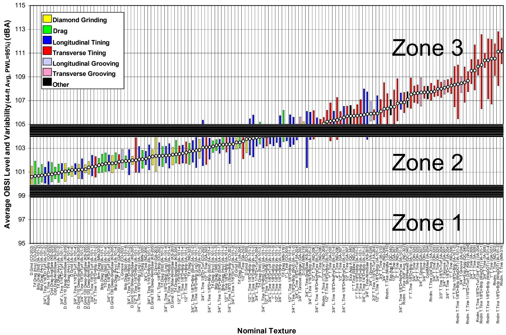
1 1 . Preliminary catalog of pavement texture vs. average OBSI level with noise zones [1]Zone 3 — Avoid Zone (≥104/105 dBA) includes aggressive transverse textures and deteriorated joints and constitutes a significant portion of existing US pavements, though diamond grinding can reduce noise up to 9 dBA relative to transversely tined surfaces [1].
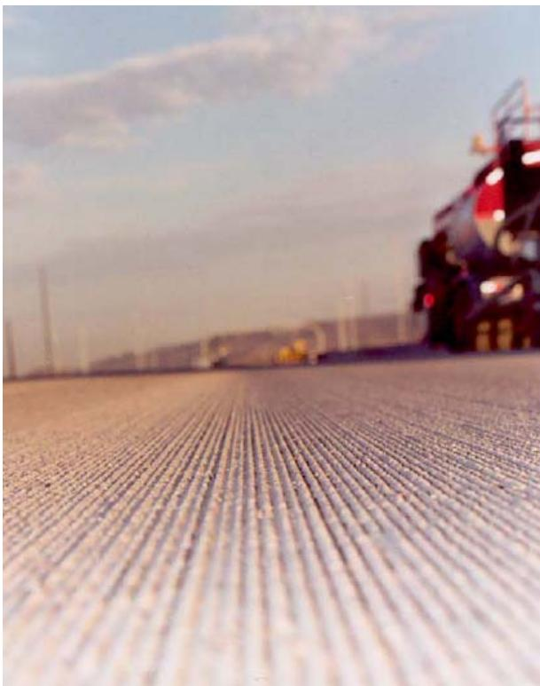
Diamond ground pavement [1]Several transverse tined sections were quieter than some longitudinally tined surfaces, particularly those with short spacings (0.5 in.) [2].
Zone 3: Avoid Zone (High Noise Levels)
A significant portion of existing US concrete pavements fall within a range characterized by highly variable textured pavement, aggressive transverse textures, and older pavements with serious joint deterioration. In these cases, frequency issues (e.g., “the whine”) may be as important as pure decibels. Furthermore, hot and humid weather conditions can cause concrete to set faster, resulting in shallower tining depths during construction [1]. Consequently, a softer, sandier concrete mix can experience a 1 to 2 dBA drop in tire-pavement noise after only one year of service due to texture wear [1].
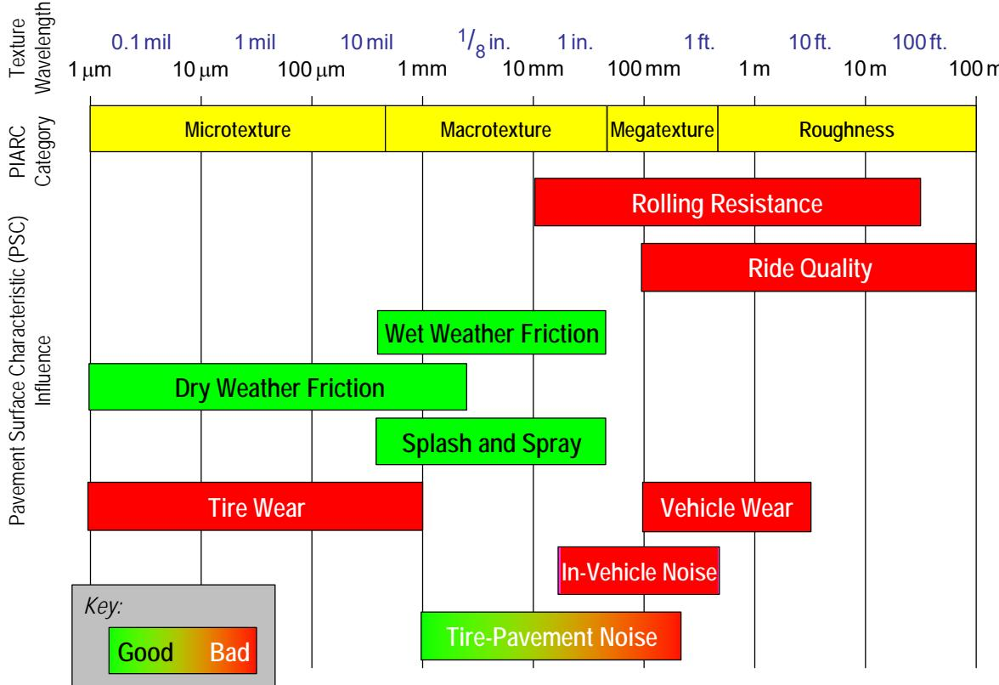
Relationship of pavement surface texture to various characteristic s [1]Regarding specific textures, transverse tining generally causes more noise than longitudinal or random textures, and constant-spacing transverse tining produces tonal “whine” (Kuemmel 1997).
Texture Type Performance and Success Rates
Regarding success rates for meeting specific targets, the majority of Diamond grinding textures meet the goal, whereas about one third of Drag textures and about one quarter of Longitudinal tining meet it [6]. Only a small fraction of Transverse tining textures meet the target, specifically those that have tine spacing ≤0.5 in [6]. While all nominal texture types have potential to be constructed as quieter surfaces, some have higher probability than others; however, better practices within each nominal texture type are more important than selecting the nominal texture alone [6].
Mitigation and Rehabilitation Strategies
Immediate actions within this zone dictate that no new pavements be built; instead, existing infrastructure must be rehabilitated, starting with the worst conditions first. This rehabilitation process should include joint repairs, such as dowel bar retrofitting and grinding, while concrete overlays provide opportunities for both structural and noise enhancement [1]. Furthermore, diamond grinding can reduce noise by up to 9 dBA.
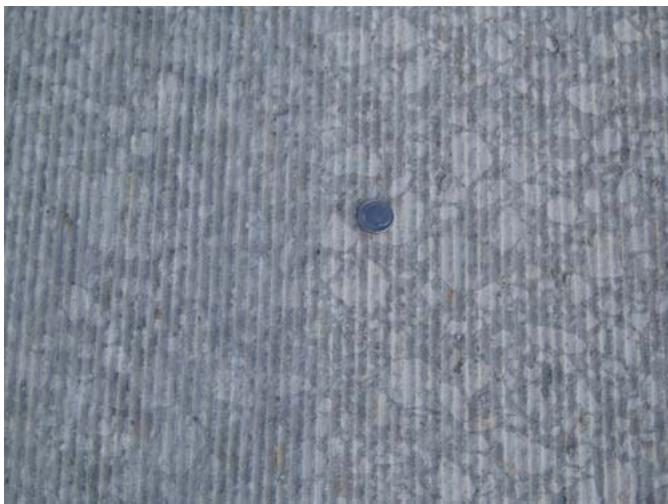
Texture after diamond grinding [1]Policy Implications and Modeling
An analysis of nearly 1,600 test sections throughout North America and Europe established that an A-weighted tire-pavement noise level of approximately 101–102 dB (ref 1 pW/m²) measured using OBSI at 60 mph is a reasonable target threshold for new concrete pavements [6]. Currently, the FHWA Traffic Noise Model (TNM) assumes an “average” pavement type, which is estimated to fall in Zone 2. Because pavements louder than “average” are currently inherently benefited while quieter ones are penalized, “unlocking” pavement type in TNM would create demand for lower Zone 2/Zone 1 solutions; consequently, guide specifications are needed to control texture configuration and noise thresholds [1].
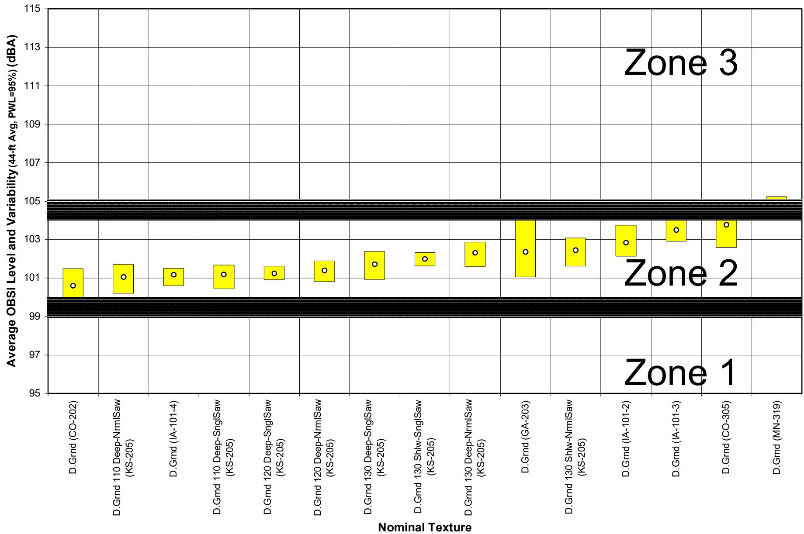
1 4. Average OBSI levels measured on diamond ground sections [1]Environmental Correction Factors
To handle climate/altitude variation, environmental correction factors were developed because identical pavement in Colorado summer vs. Iowa winter differed by >2.1 dBA, a process used to develop noise zone classification [1].
Texture Geometry and Noise Correlation
Research indicates there is no relationship between friction and noise, meaning quieter concrete pavement can be achieved without compromising safety [2].
Key Findings on Texture and Friction
While nominal texture dimensions such as width, depth, and spacing do not correlate with noise [2], and no strong relationship exists between specific texture geometry (width/depth/spacing) and OBSI—suggesting more work is needed to quantify texture—texture spectral components and skew (bias) indicators do correlate with noise in a rational manner [2].
Texture Variability and Control Methods
As-constructed texture differs substantially from specified dimensions [2], and the sand patch was found ineffective as a control tool for texture variability [2].
See also
- Pavement Noise
- On-Board Sound Intensity
- Pavement Texture
References
- E. T. Cackler, T. Ferragut, and D. S. Harrington, "Evaluation of U.S. and European Concrete Pavement Noise Reduction Methods," National Concrete Pavement Technology Center, Iowa State University, Ames, IA, Rep. FHWA Project 15 (DTFH61-01-X-00042), 2006. [Online]. Available: https://www.cptechcenter.org/wp-content/uploads/2018/03/surface_characteristics_i.pdf
- T. Ferragut, R. O. Rasmussen, P. Wiegand, E. Mun, and E. T. Cackler, "ISU-FHWA-ACPA Concrete Pavement Surface Characteristics Program Part 2: Preliminary Field Data Collection," National Concrete Pavement Technology Center, Ames, IA, 2007. [Online]. Available: https://www.intrans.iastate.edu/research/completed/concrete-pavement-surface-characteristics-proj-15-part-2/
- V. R. Schaefer and J. T. Kevern, "An Integrated Study of Pervious Concrete Mixture Design for Wearing Course Applications," National Concrete Pavement Technology Center, Ames, IA, 2011. [Online]. Available: https://www.intrans.iastate.edu/wp-content/uploads/2018/03/pervious_overlay_report_w_cvr.pdf
- J. K. Cable and D. P. Frentress, "Two-Lift Portland Cement Concrete Pavements to Meet Public Needs," Center for Transportation Research and Education, Iowa State University, Ames, IA, Rep. DTF61-01-X-00042 (Project 8), 2004. [Online]. Available: https://www.intrans.iastate.edu/wp-content/uploads/2020/10/two_lift.pdf
- V. R. Schaefer, K. Wang, M. T. Suleiman, and J. T. Kevern, "Mix Design Development for Pervious Concrete in Cold Weather Climates," CTRE, Iowa State University, Ames, IA, 2006. [Online]. Available: https://www.perviouspavement.org/downloads/Iowa.pdf
- R. O. Rasmussen, P. D. Weigand, and D. S. Harrington, "Concrete Pavement Surface Characteristics: Key Findings and Guide Specifications," National Concrete Pavement Technology Center, Ames, IA, Rep. TPF-5(139), 2012. [Online]. Available: https://www.intrans.iastate.edu/wp-content/uploads/2018/03/surface-char-part2.pdf
Feedback on this page